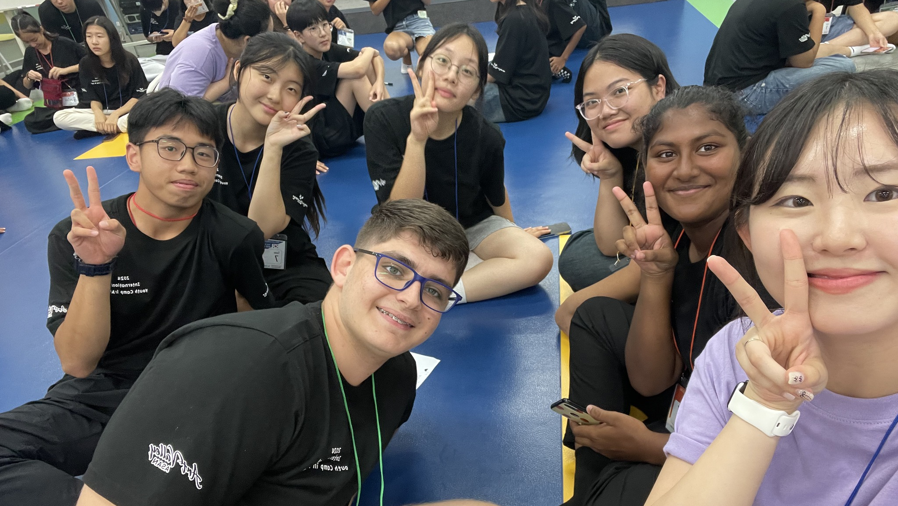
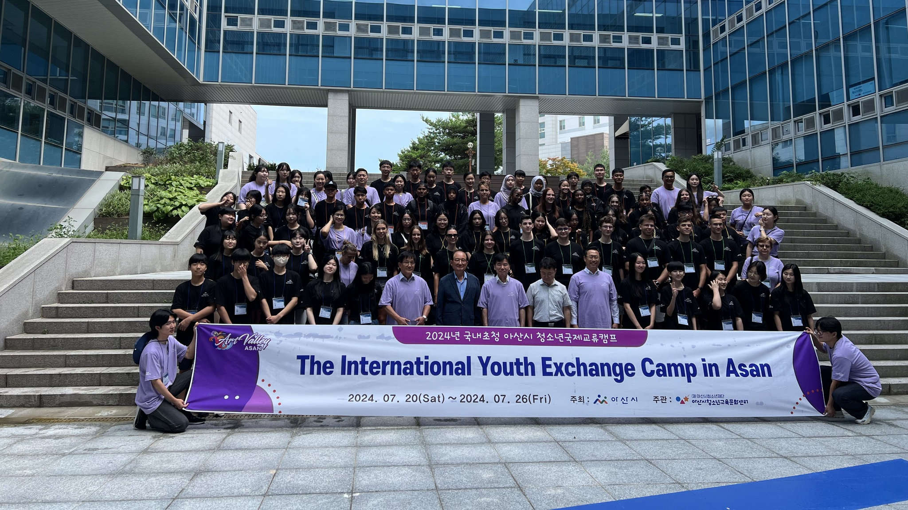

Exchange Camp in Asan 2024
In 2024, building on the success of previous years, the city of Asan (아산) organized its annual Sister Cities Student Meeting with nearly onehundred students participating from seven countries, including the USA, Kenya, Vietnam, China, Malaysia, and Hungary. That year the Municipality of Miskolc selected two high schools, the Földes Ferenc Secondary Grammar School and the Herman Ottó Secondary Grammar School to send five-five students to represent our city.
I had the honour to be one of the five students representing my high school in the event "The International Youth Exchange Camp in Asan 2024".
Throughout the week, participants were divided into ten multicultural groups, ensuring that each nation was represented in every workshop. These teams explored cultural differences, discussed topics such as education systems and current social issues, and presented the unique beauty of their respective countries. Each group was also tasked with planning their day trip to Seoul, an activity that encouraged negotiation, creativity, and teamwork.
Beyond the workshops, the program included cultural excursions around Asan. We visited a nearby traditional village, the Green Tower and the Science Museum. The schedule also included several social activities like attending a local football match and visiting the city's ice skating rink, where students from different countries shared skills and experiences - some even learning to skate for the first time.
I would like to express my gratitude for their help and support to the City of Asan and The Art Valley Asan for organizing the event, especially to Mr. Park Gyung Gui, Mayor of Asan, and Mr. Daeki Hong, the head of the organizing committee. I would also like to thank our local mayor, Mr. Pál Veres (former principal of my high school). Finally, my gratitude goes to our guiding teachers, who supported us throughout the week and helped us with everything we needed.


Participants: Enikő Cseke-Tímár1 (teacher) and Anna Krisztina Farkas, PhD2 (teacher);
Ottilia Bencze2, Máté Domonkos Iván2, Lili Enyedi2, Bendegúz András Krisztián1, Lili Mikesz1, Polett Mosonyi1, Ádám Porteleki1, Levente László Pocsay1, Donát Szabó2, Bálint Ujpál2.
- Földes Ferenc Secondary Grammar School
- Herman Ottó Secondary Grammar School